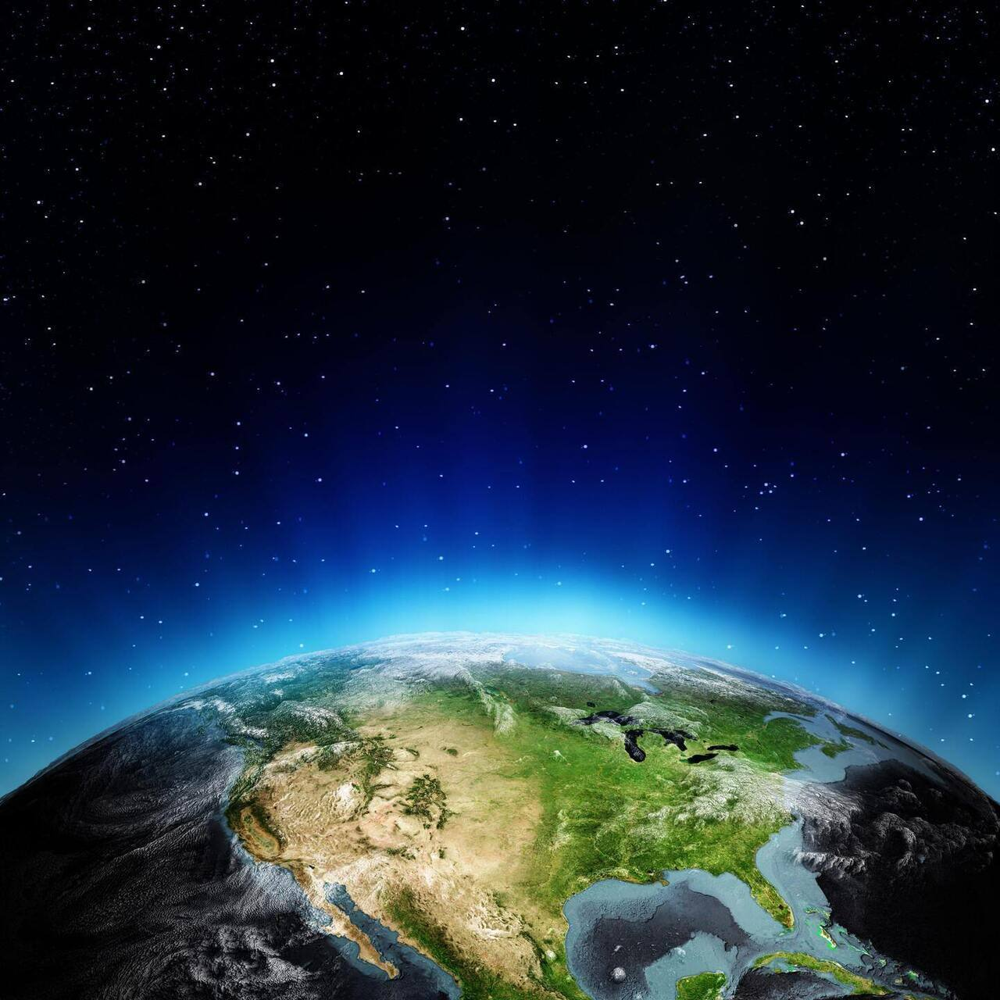
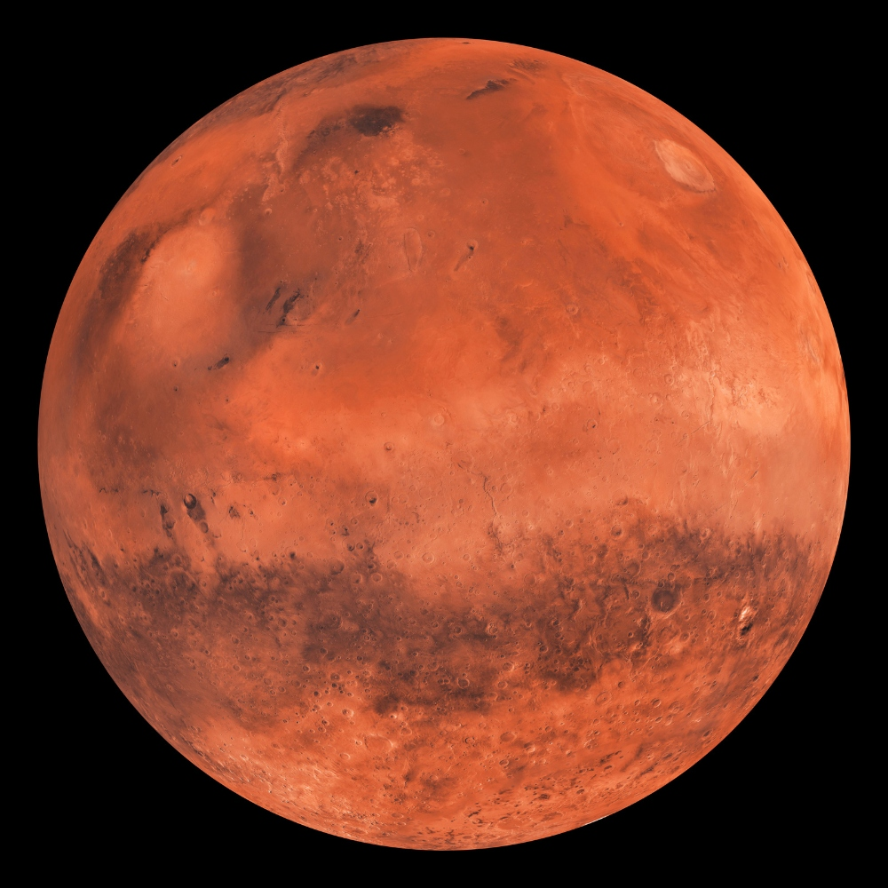

 CR7.com Humanos finalmente conseguem fazer contato com seres extraterrestes: Os chamados seres da quinta dimensão possuem habilidades que promet...
 G1 Descoberta de civilização antiga em Marte muda a história da humanidade e revela segredos sobre o universo e nossa própria origem.
Terra Novo supercomputador promete revolucionar a inteligência artificial, atingindo capacidades de processamento jamais vistas antes.
InfoMoney Mercado de criptomoedas reage a novas regulamentações globais com valorização histórica, impulsionando a economia digital.